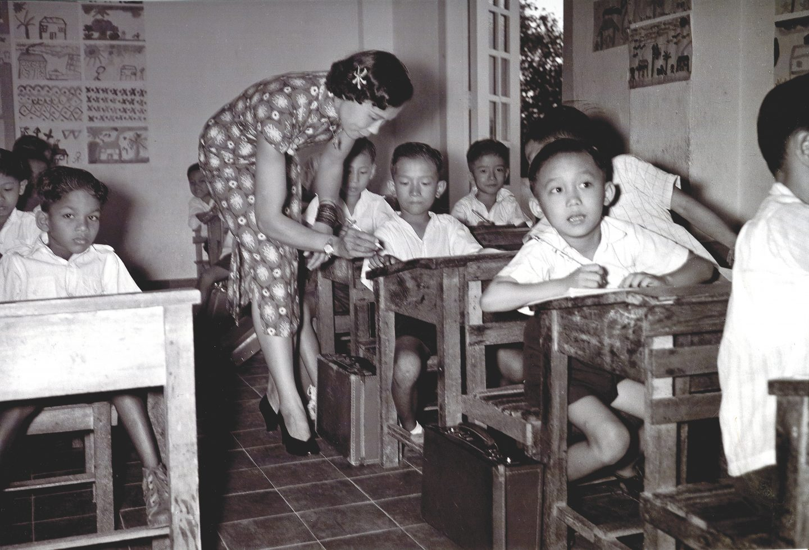

Elizabeth Choy: Not Just Beauty and Brains
29 November 1910 – 14 September 2006
If Choy had a Linkedin profile, she’d mog all the stacked, 500+ connections, ‘hey, i’m looking to connect’ profiles. Choy bagged many awards from adolescence to her final years.
1. 1946 – Bronze Cross (Girl Guides Association) Awarded by Lady Baden-Powell, the Bronze Cross is the Girl Guides' highest award for gallantry.
2. 1946 – Order of the Star of Sarawak Presented by Rajah Charles Vyner Brooke in recognition of her wartime bravery and humanitarian service.
3. June 1946 – Officer of the Order of the British Empire (OBE) Conferred in the King's Birthday Honours, she was invited to England, where she met with Queen Elizabeth (later the Queen Mother) and then-Princess Elizabeth.
4. 25 July 1946 – Private Audience with Queen Elizabeth (later the Queen Mother) While not an award, Elizabeth Choy was granted a rare half-hour private audience at St James's Palace in recognition of her wartime heroism.
5. 2 June 1953 – Represented Singapore at the Coronation of Queen Elizabeth II As the only female member of Singapore's Legislative Council, Choy represented Singapore at Queen Elizabeth II's coronation in London, and subsequently undertook, for the Foreign Office, a lecture tour of North America to explain the aspirations of the people of Singapore and Malaya.
6. 1973 – Pingat Bakti Setia (Long Service Medal), Singapore Awarded by the Singapore Government in recognition of her long and dedicated service as an educator, including her contributions to founding the Singapore School for the Blind.
7. 1989 – Invited to a state dinner aboard the Royal Yacht Britannia Choy was invited to dine with Queen Elizabeth II and Prince Philip during their state visit to Singapore.
But all these accolades and awards were not earned by chance. Elizabeth Choy dedicated her younger years to serving others, risking her life for the people during the war-stricken years and beyond.
In December 1929, Choy came to Singapore from North Borneo (today’s Sabah) to further her studies at the Convent of the Holy Infant Jesus (CHIJ) at Victoria Street. She excelled academically, obtaining the Prize of Honor in her first year of school, and resided with her fourth uncle in a double-storey shophouse at Selegie where he ran a music shop. However, the untimely death of her mother in 1931 and the Great Depression forced upon her the burden of raising her six younger siblings. As such, she took on the role of a breadwinner, giving up a college education, even a possible scholarship, to start work so she could finance the education of her younger siblings.
When Malaya fell into the hands of the Japanese, Choy volunteered as a nurse with the Medical Auxiliary Service.
And when Singapore eventually got attacked, Choy found her home damaged and soon looted. On top of that, she had lost her brother as part of the Sook Ching Massacre.
After her husband and herself had lost their jobs following the invasion, they were offered an opportunity to set up a canteen stall in Miyako hospital (the former mental institution), before they shifted to Tan Tock Seng Hospital later on. The hospital was running regular ambulance services between that and Changi Prison for the prisoners.
Coupling their bravery with a keen eye for opportunity, they made use of the ambulances to help the prisoners by passing them cash and parcels containing fresh clothing, medicine and letters during their daily deliveries. As though those acts were not already dangerous enough, they later also smuggled radio parts for hidden receivers which were strictly banned by the Japanese. (Radios provided channels for the people to receive allied news)
However, their dark undercover secrets were soon discovered and halted by the Japanese during the Double Tenth incident. On 27 September 1943, a joint Australian-British commando force launched Operation Jaywick, attacking seven Japanese shipping vessels in Singapore waters.
The Kempeitai had an inkling that the internees at Changi Prison were responsible, as the Johor Branch of the Kempeitai claimed that the foreign internees in Changi Gaol (prison) had transmitted news to the attackers. However in reality, they were not to be blamed, but allied forces from Australia and Britain. The Japanese had just undermined the allies’ abilities to carry out such substantial attacks with its geographical distances, thus pushing the blame onto local civilians.
Hence, in the early mornings of 10/10/1943, internees at Changi Gaol assembled at the courtyard while the cells were thoroughly searched. Several were arrested on suspicion of assisting the operation, the radio sets the Choys helped to smuggle in were seized too.
During investigations, an informant tattled on the Choys. As a result, Choy’s husband, Koon Heng, was arrested on 29 October. A Japanese car stopped outside the Choys’ tuckshop and asked Koon, "Oh, which is the road?... Come, show us the way." And as Koon followed, he was taken and never seen again.
This amounted to a total of 57 internees seized for interrogation. This incident remains remembered as the Double Tenth Massacre, as fifteen of the 57 died from torture.
After several agonising days of Elizabeth searching for her husband’s whereabouts, her instincts told her he was captured by the Kemepeitai. Hence, Choy braved herself and made her way to the Kempeitai East District Branch (today’s YMCA) to ask about her husband’s whereabouts. Although the Japanese initially acted oblivious and denied all of her allegations, two to three weeks following Koon’s arrest, they eventually invited her back to the branch with promised access to see her husband, even asking her to bring a blanket along for him. Upon stepping into YMCA, she was immediately interrogated before confiscating all her belongings: her handbag, jewellery, everything. Nothing left. Only allowed to hold onto the blanket and clothes, she was then lured into a cell.
With their trap successfully sprung, they successfully imprisoned Elizabeth, which marked the beginning of what would become 193 of the darkest days of her life.
Thrown into a cramped cell of about 10 by 12 feet – barely any different than a standard parking space of 9 by 18 feet – she found herself stuck in a cell with 20 men (and another lady, albeit for a short period). The cell was claustrophobic, dirty, damp, dark, with only a single narrow air-vent and no windows to let in light. From dawn to dusk, she sat kneeling on the cold, hard wooden planks hungry, as bugs roamed around the inmates, treating them as food. “There's nothing but all the detainees, squatting there, kneeling there like dumbbells, nothing, couldn't move, couldn't talk, couldn't do anything, not allowed to.” The cell had only a single toilet shared among all 21 inmates, which formed the only furniture there. Three times a day, the inmates are fed with a pathetic portion of rice, with a little bit of meat and vegetables. And after each meal they passed a filthy, nasty mug, with a bucket of tea around. “... Starvation diet. Very effective. My waist line not more than 12 inches, eight inches or 13 inches.” In modern day, such conditions are barely fathomable that it’d be more believable as a 24-hour challenge video found on Youtube.
Unexpectedly, the blanket Elizabeth had been told to bring became a lifeline. She stuffed it into the toilet's drain to block the hole, creating a basin so she could wash herself. Soon, the only other female inmate, Lena Beck, and the male prisoners borrowed the blanket to do the same. Everyone respectfully looked away while one another bathed in the same cell, before putting their only set of clothes and garments back on.
Though stuck in such grim reality, she still made do with whatever she had. For instance, she had obtained a stone from the guards, she used it to scrub the cell’s toilet for everyone. A sliver of wood was repurposed into a shared, makeshift toothbrush for the inmates to clean their teeth.
In the cell, not only were the living conditions appalling, the rules imposed on them were just as sick for both the body and the mind.
Since talking was forbidden, innovation triumphed as the inmates constructed their own sign language to communicate with each other. This sign language served as a medium for trauma bonding amongst the prisoners as well. Elizabeth recounted, “Oh, the people were so depressed. They didn't know what to do. There was one, I remember, Mr Tan, whose son I taught in St Andrew's School. And he was so sad he was going mad. Of course we couldn't talk. We learnt the sign language. When the sentry was not looking we would use A, b, C, D with our sign language. And he told me, ‘oh, I don't know what to do. They're going to kill my wife and my children.’ ‘Oh,’ he said, ‘I think I'll go mad.’”
Almost routinely, an inmate would be taken away for interrogation. Only God could guess whether they’d make it back alive. Sleep was nearly impossible with the cries and screams of the tortured haunting the night as everyone laid right beside each other like sardines, staring at the ceiling, with the bright light on.
Through such abysmal conditions, a beacon of hope for her was her faith in Christianity. Her strong Christian faith and the classic texts that she learnt in school about moral values kept her strong.
In the adjoining cell was Bishop John Leonard Wilson, who had also been imprisoned by the Japanese. Elizabeth was determined to be ministered by him, so whenever she scrubbed his floors, she seized the opportunity. As she reached Bishop Wilson's cell and the guards looked away, she would quietly kneel beside the bars to receive his ministry.
Bishop Wilson consecrated some burnt grains of rice and water from the toilet and there, amid the filth, a grateful and tearful Elizabeth received Holy Communion.
And at this point, Elizabeth was still unaware of her family’s whereabouts. Her husband was still missing, or at least that’s what she believed, until 9 December 1943.
In an attempt to extract confessions from the Choys, the Japanese resorted to brutal and revolting measures – albeit to use such adjectives are already of mercy – Elizabeth was slapped, kicked, spat at and subjected to electric shock treatment, in front of her very own husband.
In a painful recount by Elizabeth, she described, “So one day they put some bars of wood on the floor and they tied me up, and I had to kneel on this wood, very rough wood. And they stripped me, the Topless really, topless. And they tied me to the woods so that I couldn't go forward, I couldn't go backward, I couldn't go sideways, and they applied electric shock to me… And there my husband... they brought my husband… I didn't know where he was before. They brought my husband. He was kneeling beside there watching me being tortured. They said, ‘Now, both of you confess, we'll let you go. If not, we'll execute both of you.’ My husband said, ‘I've nothing to tell you.’ They said, ‘All right.’ They tortured me. Oh, that was terrible. Unless you have gone through it you don't know what it's like. No clue... They're torturing you, of course you cry, and then your tears will come, your nose will be running.”
Koon also described, “She was tied up with hands and legs to a frame kneeling on firewood. They took out two leads from a generator and applied it to her body for 15 minutes. She was screaming all the time …”
Such horrors alone are enough to evoke a visceral reaction, but Elizabeth's lingering scars make this even more heartbreaking. The electrocution was so traumatic that she refused to touch any electrical appliances afterwards.
Up until this interrogation, Elizabeth had faced every day's questioning with her head held high, walking back to her cell with a quiet yet determined resolve. Apart from the screams forced from her and the tears that streamed down her face, she remained composed. She never confessed the names of anyone she had assisted, never caved in to the pain, never admitted to being pro-whichever-nationality, and held true to her conviction of just wanting to help others. R. H. Scott, a former director of the British Ministry of Information (Far Eastern Branch) and principal witness at the War Crimes Court in Singapore, later testified that he witnessed Elizabeth being stripped and severely beaten "on at least one occasion". Other torture methods she endured included being pumped with water as she would later recount suffering such pain that tears would roll down her face. However, this new level of torture shattered her breaking point, as when attempting to stand alone after, she could only collapse.
Elizabeth’s resilience beyond physical limits probably felt like a threat to the Japanese’s authority as they devised an even more barbaric method of torture. If physical torture had proved futile, surely her mind would falter instead. Thus, in that same torturous, already excruciating, session, they went all out on their final attempt to force a confession.
The Kempeitai issued an ultimatum: confess to her involvement in operation Jaywick, or both she and her husband would be sentenced to death. Taken to Johor and beheaded with her husband’s head rolling mere two hours later. And so, they were given one last goodbye to each other, in which, with tears streaming, they lovingly bade their last farewells to each other. Eventually, it was realised to be a sickening psychological ploy to break them.
On Elizabeth’s 193rd day of imprisonment, resilience and kindness eventually won. Even her character had moved the Japanese. Unable to get anything out of her, accompanied with unanimous testimonies of Elizebath’s kindness, the Kempeitai had released her, "Now, we have been everywhere asking people about you. And we have been told that you're very kind, very ready to help people… so we will let you go"
With that, she was finally released after 193 days, stepping out of the YMCA building in the very clothes that she entered wearing. On a post-war trial conducted on 18 March 1946 against 21 kempeitai members, one of the accused, Warrant Officer Monai Tadamori (who was eventually sentenced to death) remarked, “I … sent away Mrs Choy. She went back with no sign of pain, just in the same spirited condition as she came in.”
On the other hand, Koon was sentenced to a further 12 years in Outram Prison. Fate, however, had other plans. Japan's surrender less than two years later brought his imprisonment to an abrupt end. Until then, Elizabeth did not see him again, only reuniting after the war ended.
After the Japanese surrendered, Elizabeth was offered retribution against her torturers with execution, and asked to identify any Japanese who had tortured her. But she refused to name drop, “I don’t blame the soldiers… It was the war that was wicked… I shall not forget but I shall forgive”
Choy was subsequently invited, as part of a privileged few, to Britain to recuperate from the war. She eventually stayed there for four years. There, she devoted her time to education, studying Domestic Science at Northern Polytechnic and also teaching at a London Council School.
Even after her return to Singapore, Elizabeth resumed teaching at St Andrew’s and became involved in the political upturn preceding independence.
From 1951 to 1955, she was nominated by the Governor to the Legislative Council of Singapore, where she spoke on behalf of the poor and needy and campaigned for the development of social services and family planning. On top of that, she served as a second lieutenant in the women’s auxiliary of the Singapore Volunteer Corps, where she earned the nickname “Gunner Choy”.

In 1974, she decided to put a halt to her teaching career at St Andrew’s, and carry her invaluable work to head the work at the School for the Blind. She proceeded to take on the role of the first principal of the School for the Blind from 1956 to 1960.
“I used to go to the kampungs to find the blind children and try to persuade their parents or grandparents or guardians to let their children come into the school as boarders or attend the school to learn how to read and write. Of course, to them, the whole thing sounded absurd. How can they study when they have no sight? I remember how happy the blind children were. They took any challenge bravely and with determination.”
Even in her nineties, she continued with her social work and school visits.
She eventually passed away in a battle with pancreatic cancer, on 14 September 2006, at the age of 95.
Through all 90 years of her life, spanning close to a whole century, Elizabeth served as a role model for many generations, especially for women, with an unwavering passion to serve. Her service reigns eternal beyond mortality.